BIBLIOTECA OMEGA | Catálogo completo
Chatbot
Contacto
Introducción a la Gestión de la Tecnología y de la Innovación
Jorge Robledo Velásquez
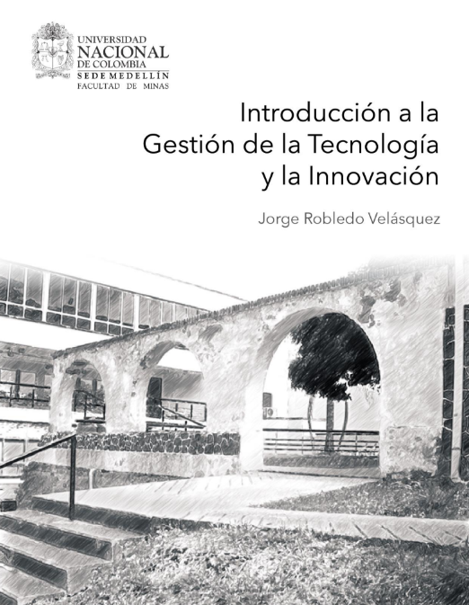
Ver Libro
Historia y Tecnología
Instituto Nacional de Tecnologías Educativas y de Formación del Profesorado.
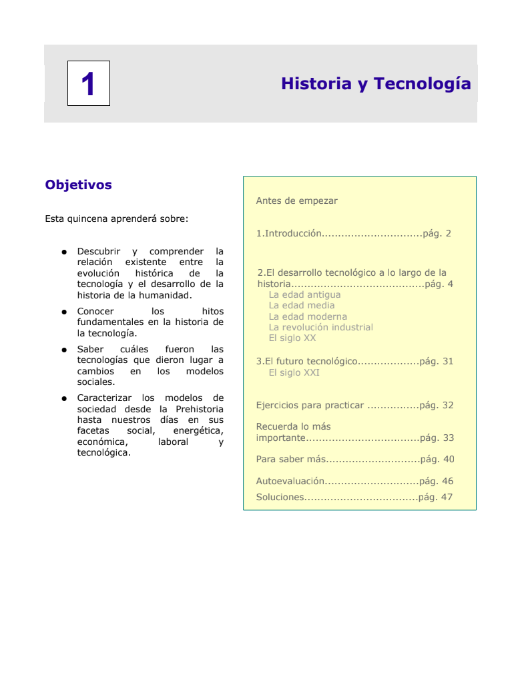
Ver Libro
Conceptos básicos de cienca, tecnología e innovación
Comisión Nacional de Investigación Científica y Tecnológica.
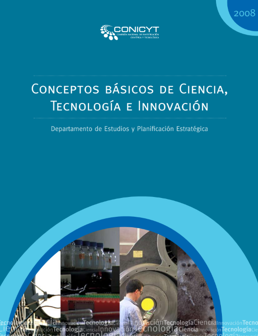
Ver Libro
La ciencia y tecnología en el desarrollo: Una visión desde América Latina
Red de Bibliotecas Virtuales de Ciencias Sociales en América Latina y el Caribe
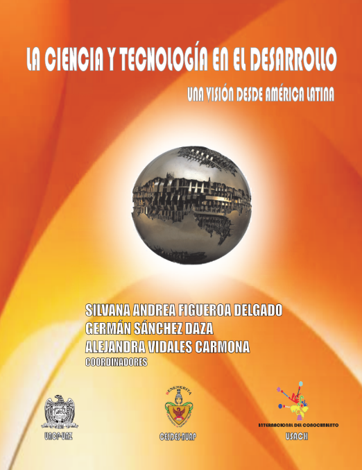
Ver Libro
Guía para el buen uso de las nuevas tecnologías para familias y profesionales en el ámbito de la infancia
Observatorio Canario de las Telecomunicaciones y de la Sociedad de la Información
Ver Libro
Guía sobre el uso inteligente de las nuevas tecnologías
Bienestar y protección Infantil
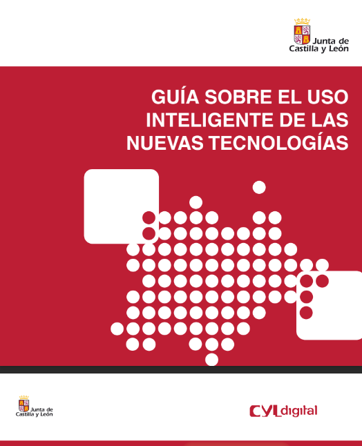
Ver Libro
La tecnología
Dr. Fernando García-Córdoba
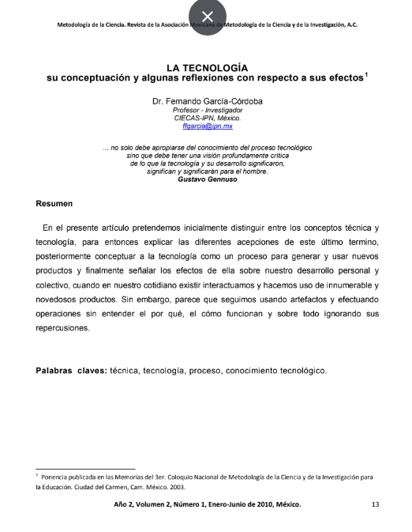
Ver Libro
Guía con lineamientos generales para el uso de tecnologías emergentes
Ministerio de Tecnologías de la Información y las Comunicaciones de Colombia
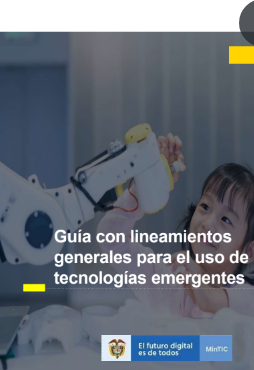
Ver Libro
Lo que usted debe saber sobre riesgo tecnológico
Sandra Lucía Pérez García, Sandra Isabel Granados Avellaneda y Sandra Patricia Estupiñán Vargas
Ver Libro
Introducción a la Tecnología Educativa
Manuel Area Moreira
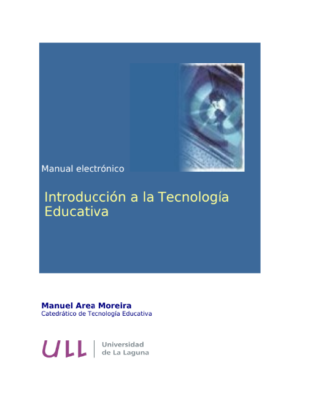
Ver Libro
Fundamento de Tecnología (Artículo)
Universidad de Antioquia
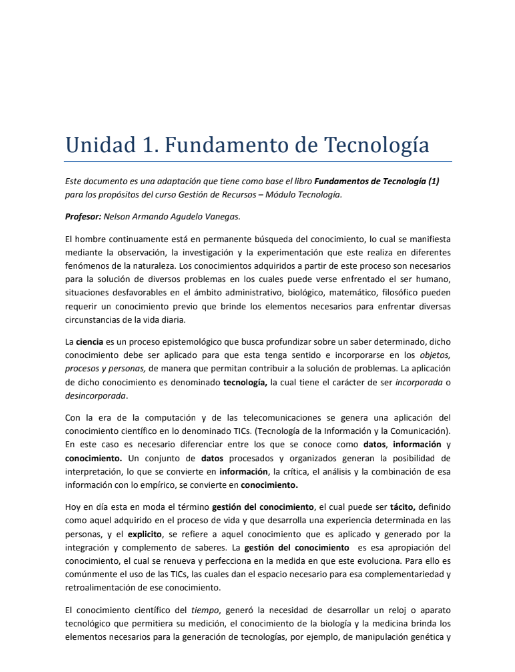
Ver Libro
El uso de las tecnologías en la lucha contra el COVID 19. Un análisis de costes y beneficios
Agencia Española de Protección de Datos
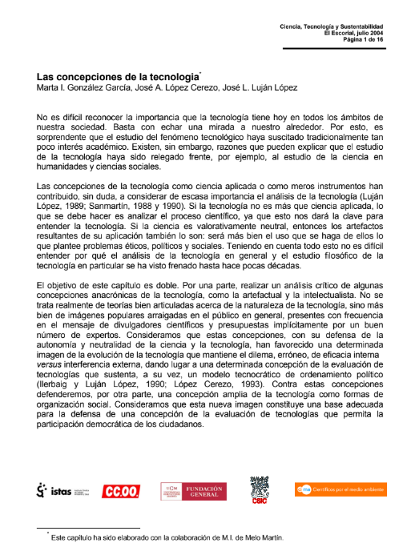
Ver Libro
Las concepciones de la tecnologia
Marta I. González García, José A. López Cerezo y José L. Luján López
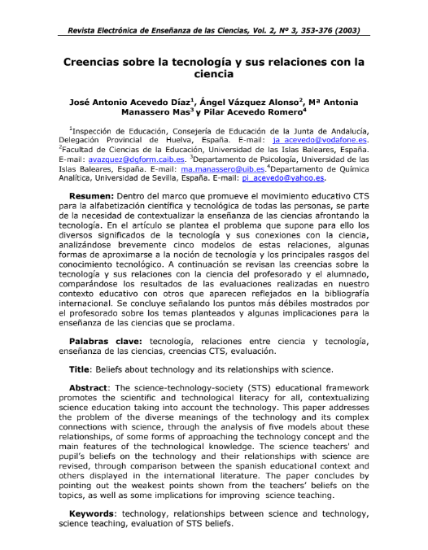
Ver Libro
Creencias sobre la tecnología y sus relaciones con la ciencia
José Antonio Acevedo Díaz, Ángel Vázquez Alonso y Mª Antonia Manassero Mas
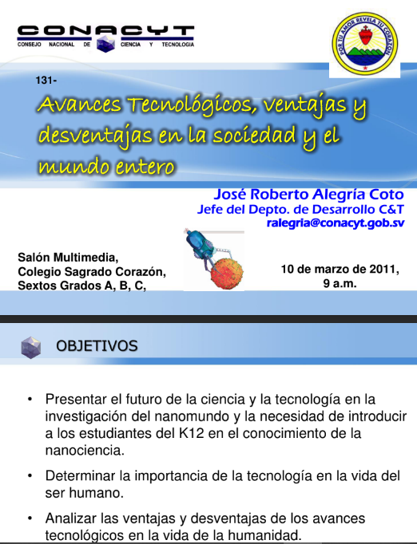
Ver Libro
Technology: Concepts and Definitions (Inglés)
International Institute for Applied Systems Analysis
Ver Libro